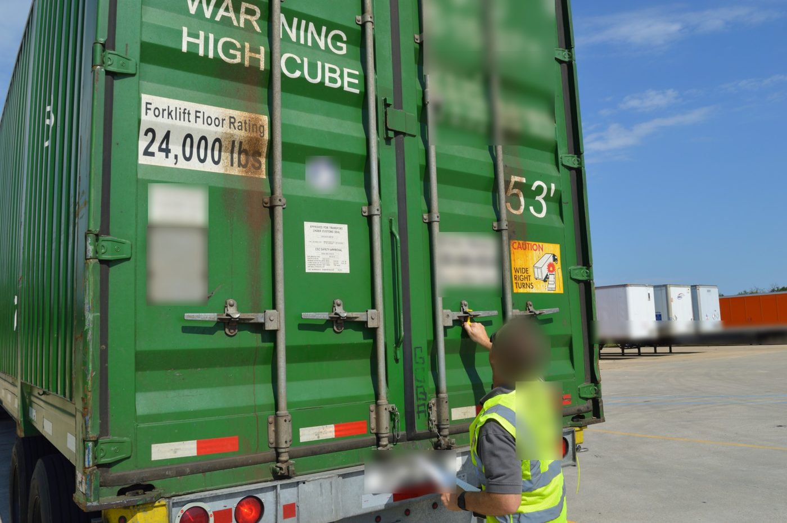
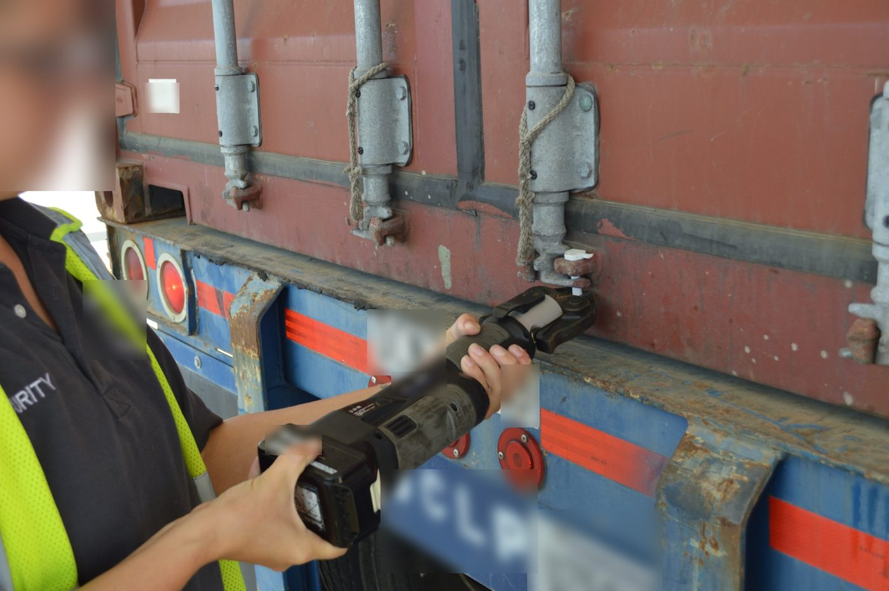
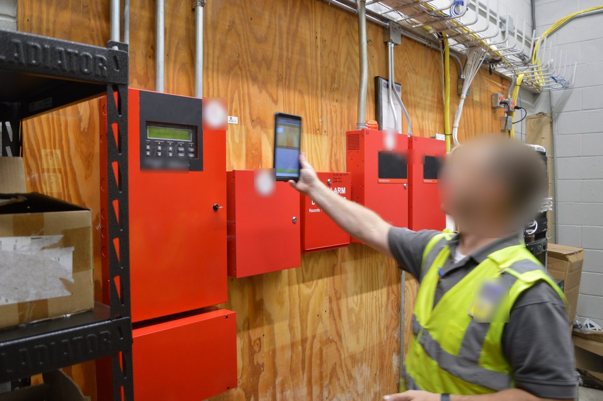
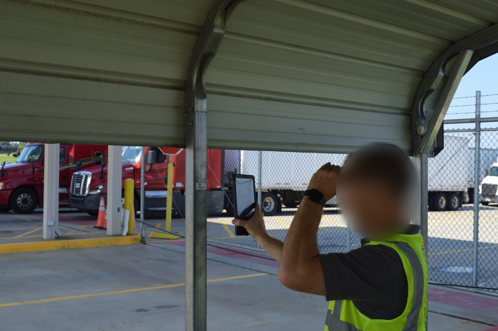
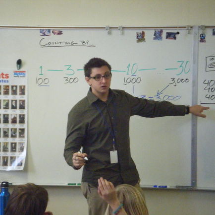
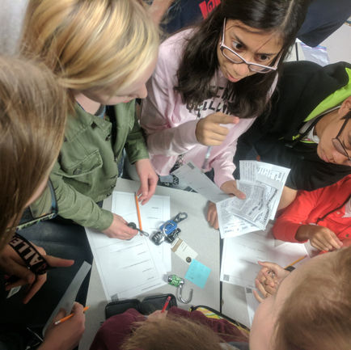
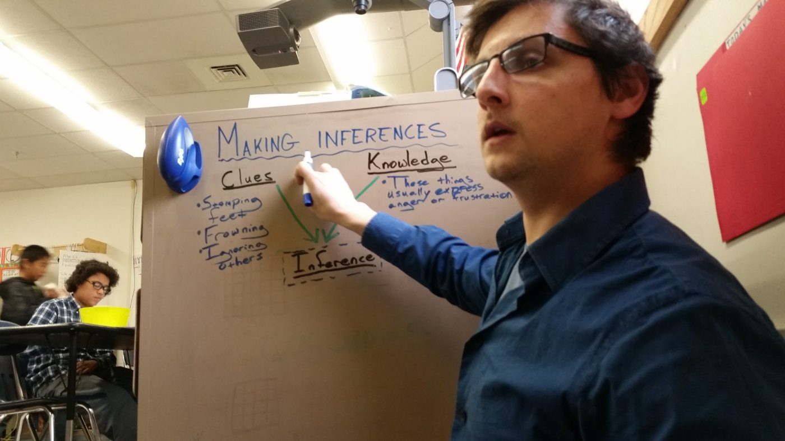
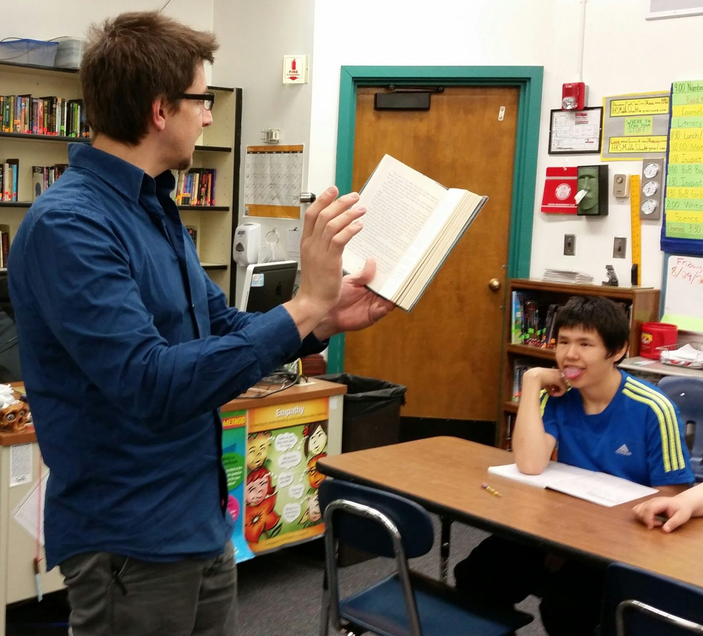
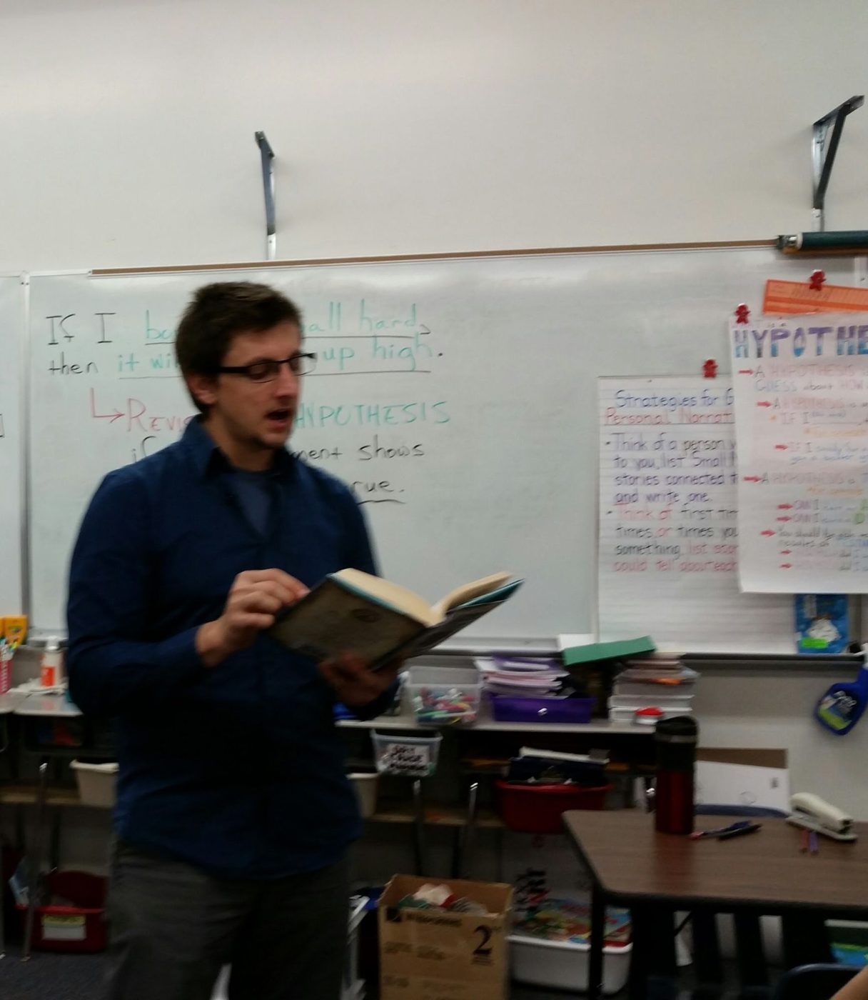
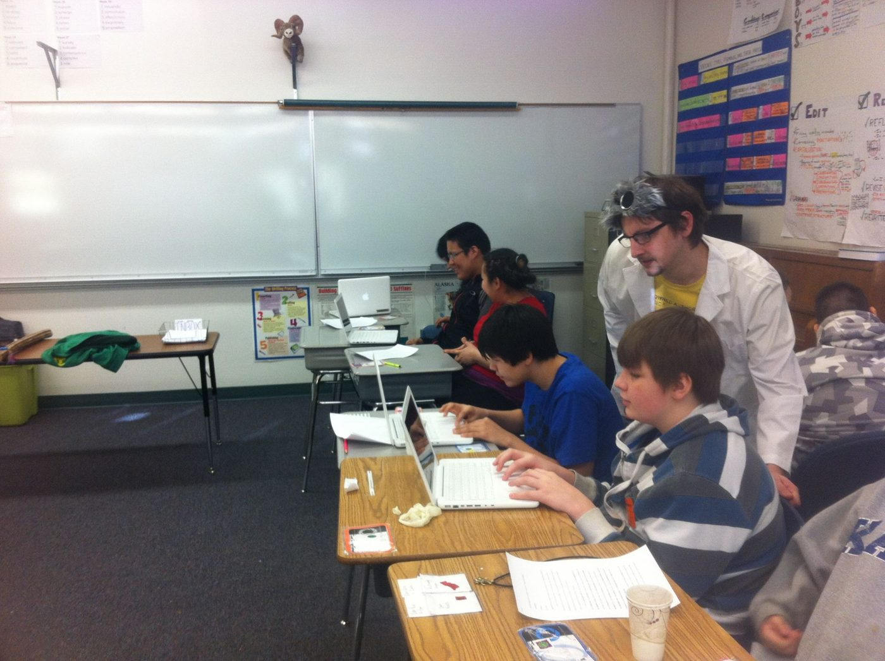

Teaching & Training
Preparing professionals and engaging minds.
With extensive education experience, I bring a wealth of knowledge and expertise to teaching, training, and orientation. My work spans pre-school through college and adult learners, one-on-one or in large groups.
Areas of experience
Roles over the years
- Corporate trainer and facilitator (2023 to present): compliance, leadership, and certified First Aid / CPR / AED instruction; I'm also an HSI Instructor Trainer, so I certify other instructors.
- High school English (Allen ISD, 2015–23): Phoenix GT (Pre-AP/IB) and on-level English I, summer remediation in person and online, and Mentor Teacher coaching colleagues.
- Middle school, every subject (Kaktovik, Alaska, 2013–15): a combined grades 5–8 classroom, plus cross-country coaching, Schools on Skis, and the Chess and Writing Clubs.
- Tutoring and test prep (2004–13): Kaplan verbal tutor, Sylvan Learning teacher (reading, writing, math, ACT prep), college Writing Center tutor, and one-on-one mentoring for neurodivergent students.
- Clubs and sponsorships: Write Club for six years (student work published in regional and national contests and anthologies, including the Scholastic Art & Writing Awards and the NaNoWriMo Young Writers Program), an annual campus poetry slam, Student Council, and Chess Club.
Training security teams on site
As a corporate trainer, I've trained security professionals in person, right on post, at logistics and distribution centers, data centers, oil and gas facilities, retail stores, corporate offices, and more. Every one of those sites comes with its own rules, and the officer standing at the gate or walking the floor is often the first person who has to get them right.
- C-TPAT and import security: at distribution sites, officers inspect containers and trailers, verify and cut bolt seals, and document the chain of custody for goods coming into the country for broad distribution. That's the Customs Trade Partnership Against Terrorism in practice, and it's a small but real piece of national security: one tampered container can put an entire supply chain (and the people at the end of it) at risk.
- Privacy and access control: HIPAA expectations where health information is on site, plus the strict badge, escort, and visitor-log procedures that data centers and corporate campuses depend on.
- Life safety: fire alarm panel checks, fire extinguisher training, emergency response and evacuation, and First Aid / CPR / AED.
- Site-specific safety: OSHA basics, heat safety, yard and dock awareness around moving trucks, hazardous-area rules at oil and gas facilities, and yes, even golf cart safety for officers patrolling big campuses! For some of these I adapt safety training resources from Marsh & McLennan Agency to fit each site.
- Professional conduct: report writing, de-escalation, use of force, and hands-free bag checks.
Much of that training became e-learning, too; try the C-TPAT Import Container Security Training. I also mocked up a risk management dashboard to show leadership how problems in one department ripple into the others.




Teaching & instruction: what makes a good trainer
Some of my favorite work is teaching supervisors and site leaders to train their own officers. Whether it's a classroom of teenagers or a security team on post, these are the skills I practice myself and coach others in (they're the backbone of my Supervisors as Trainers course):
- Communication: conveying information clearly and actually connecting with the people in the room.
- Active listening: paying attention to learners' needs and concerns, then tailoring the training and building rapport.
- Empathy & patience: respecting where learners are coming from, so the room feels supportive.
- People skills: building strong, positive working relationships that outlast the session.
- Instructional design basics: turning written procedures (like post orders) into training people can use.
- Training needs analysis: finding what a specific post or team really needs, and setting objectives around it.
- Research: staying current with the industry and the client, so the content stays accurate and useful.
- Adaptability: reading the room, adjusting to different learners, and handling the unexpected question gracefully.
- Problem-solving: a solutions-first approach to complex issues.
- Leadership & coaching: motivating new and seasoned staff alike, and mentoring them to improve.
- Knowledge checking: asking the right questions to confirm learning sticks, and refreshing it when it doesn't.
Training as insurance
Security training doesn't bring in revenue directly, but it's one of a company's strongest defenses against lost contracts and lawsuits. When an officer's conduct ends up in court, the defense often hinges on proof the officer was properly trained. So I wrote a strategy proposal for our Learning & Performance team framing training the way leadership already thinks about insurance:
- The cost of getting it wrong: preventing one major incident saves anywhere from about $75,000 (the legal defense alone, even when the company wins) to $3,000,000 or more for a severe liability settlement. National negligent-security data puts median settlements around $1.1 million for assault and $1.6 million for robbery.
- Time back for the work that matters: automating enrollments, credential uploads, assignments, and reminders between the HR system and the LMS, plus one standard request form, to recover an estimated 15 to 20 administrative hours a week per team member.
- Reporting leaders care about: tracking projects in Asana by the liability they address (for example, “Reduce use-of-force liability: de-escalation module”) instead of by individual tasks, so the value of training is visible in real time.
- The right tools: enterprise AI licenses and prompt-engineering training, so courses get built faster without hours spent fixing AI mistakes.
The numbers behind the $0.9–1M figure on my resume come from the same approach: the rise in training completion (from about 60% to 96%+) applied against the organization's baseline legal exposure.
Photos






See also Instructional Design for faculty training and technology rollouts, and Mindfulness & Wellness for mentoring and student support.
Try my sample e-learning courses: compliance, safety, de-escalation, policy, and software training built in Articulate Rise 360, like the C-TPAT Import Container Security Training and Heat Safety.